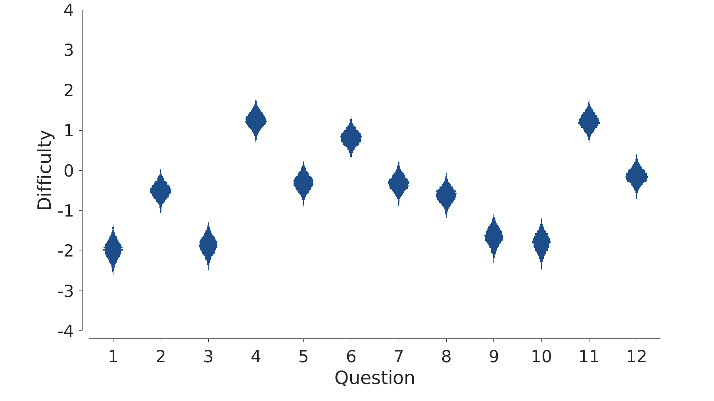

This case study involves a quiz that seems to have originated here, and promoted on twitter here. It involves identifying a set of 12 cricketers, on the basis of cartoon drawing of their bowling actions, in which their identities are hidden by depicting them as Santa Claus. (Many aspects of this quiz are mysterious to us, with the choice of Santa Claus being at the top of that list). The drawings are show below.
Our data come from the twitter thread, in which people provided free text responses as answers. We collected and parsed these answers for two days following the original tweet. This resulted in a data set with 127 people, providing a total of 925 out of a possible answers. Some people provided answers to all 12 questions, some people only answered one question, and other people were somewhere between. In total 68 different players were suggested as answers.
The figure below details the accuracy of each user for each question. People are shown along the -axis, ordered from those who answered the most questions to those who answered the fewest. Within people who answered the same number of questions, there is a secondary ordering in terms of the number answered correctly. Questions are shown along the -axis. A green circle indicates that the person answered the questions correctly, a red circle indicates they answered it incorrectly, and a blank space indicates they did not provide an answer. In the figure, two people are highlighted. Person 34 answered all 12 questions, but only got five correct. Person 84 only answered four questions – numbers 1, 3, 9 and, 10 – and was correct for all four.
One way to model the cricket Santa quiz data is with a foundational psychometric model known as the Rasch model (e.g., De Boeck & Wilson, 2004, Chapter 2.3). The canonical application of the Rasch model is to a set of students answering a set of questions, with the goal of measuring the ability of each student and the difficult of each question. If basic data are whether or not each student answered each question correctly. Our data can be summarized in exactly this form, with if the th person answered the th question correctly, and if they answered it incorrectly. The Rasch model assumes that the probability that the th person answers the th question correctly is
where is a parameter representing the ability of the th person, and is a parameter representing the difficulty of the th question. This means that
Intuitively, it becomes more likely that the question will be answered correctly if the difference is large, which can be interpreted as the ability of the person being greater than the difficulty of the question.
The corresponding graphical model is shown below. It shows how the latent person abilities and questions difficulties interact to determine the probability of any person-question pairing being answered correctly.
The JAGS model Rasch_1_jags.txt implements the graphical model in a straightforward way.
xxxxxxxxxx# Rasch modelmodel{# Datafor (p in 1:nPeople){for (q in 1:nQuestions){y[p, q] ~ dbern(pi[p, q])pi[p, q] = exp(theta[p] - beta[q])/(1 + exp(theta[p] - beta[q]))}}# Priorsfor (p in 1:nPeople){theta[p] ~ dnorm(0, 1)}for (q in 1:nQuestions){beta[q] ~ dnorm(0, 1)}}
The MATLAB script cricketSanta_1.m supplies the quiz data and generates plots of the posterior distribution for the and parameters. The inferred posterior distributions for question difficulty are shown below, as violin plots. Smaller values indicate easier questions, and so it seems clear that questions 1, 3, 9, and 10 are relatively easy, while questions 4, 6, and 11 are relatively difficult.
The inferred posterior distributions for person ability are shown below, as error bars showing 95% credible intervals. There is clear structure of the first set of people who answered all 12 questions, with their accuracy corresponding directly to inferred ability. The inferences about people who did not answer all of the questions are more subtle, because there is a trade-off between the proportion of questions accurately answered, the number answered, and which questions were answered correctly or incorrectly.
The canonical application of the Rasch model is to data in which every person answers every question, and whether their answer was correct or incorrect is known. The cricket quiz data are not quite of this form, because people chose the questions that they answered. This information, about whether or not each person “opted in” to answer a question, seems psychologically relevant to understanding both their ability and the question difficulty. The information about opting-in is not, however, explicitly included by the binary representation of the data, and so the previous model does not explicitly consider this part of people’s decision making.
To extend the model to consider opting-in, we recode the data as is the th person did not attempt an answer for the th question, if they answered it correctly, and if they answered it incorrectly. Perhaps the simplest psychological extension of the Rasch model to this situation assumes that each person has some independent probability, probability of answering each of the questions. Thus, the probability they do not answer the th question is just , the probability they do answer and get it right is and the probability they answer but get it wrong is . It is easy to check that, as logically required, these three probabilities sum to one.
According to this model, the data are now distributed as
where
Note that the categorical distribution provides the natural extension of the Bernoulli distribution moving from the previous binary representation of the data in terms of correct or incorrect answers to the extended representation in terms of three possible outcomes.
The graphical model for the extended model that includes opting-in is shown below. The latent parameter is included, and contributes, along with , to the definition of the probabilities in .
The JAGS model Rasch_2.txt implements the graphical model. The main change is the definition of piPrime.
xxxxxxxxxx# Rasch model, with independent opt inmodel{for (p in 1:nPeople){for (q in 1:nQuestions){y[p, q] ~ dcat(piPrime[p, q, ])pi[p, q] = exp(theta[p] - beta[q])/(1 + exp(theta[p] - beta[q]))piPrime[p, q, 1] = 1 - rho[p] # no answerspiPrime[p, q, 2] = rho[p] * pi[p, q] # correct answerpiPrime[p, q, 3] = rho[p] * (1 - pi[p, q]) # incorrect answer}}# Priorsfor (p in 1:nPeople){theta[p] ~ dnorm(0, 1)rho[p] ~ dunif(0, 1)}for (q in 1:nQuestions){beta[q] ~ dnorm(0, 1)}}
The MATLAB script cricketSanta_2.m supplies the quiz data and generates plots of the posterior distribution for the and parameters, as before. They are shown below. It seems clear they provide the same inferences as for the previous model, despite the change in the information coded in the data, and the addition of the answering probability parameters .
A more interesting model of opting-in behavior makes the assumption that, if a person (say) plans to answer four questions, they do not simply chose four at random. Instead, it seems psychologically plausible that people might chose to answer the questions they think they will answer correctly. This idea introduces a link between the part of the model that addresses the accuracy of responses, and the part of the model that addresses opting-in. Perhaps the simplest sensible assumption is that people answer questions in proportion to how likely it is they that will answer it correctly. Thus, if a person’s ability and a question’s difficulty make it 80% likely they will be correct, then there is an 80% probability they will opt-in and answer the question.
The graphical model below implements this idea. It is really a simplification of the previous model, in which the previously independent probability for the th person answering any question is replaced by the question-specific probability coming from the Rasch model. This leads to the node being removed, and the definition of being changed by substituting for .
The JAGS model Rasch_3.txt implements the graphical model.
xxxxxxxxxx# Rasch model, with accuracy based opt inmodel{for (p in 1:nPeople){for (q in 1:nQuestions){y[p, q] ~ dcat(piPrime[p, q, ])pi[p, q] = exp(theta[p] - beta[q])/(1 + exp(theta[p] - beta[q]))piPrime[p, q, 1] = 1 - pi[p, q] # no answerspiPrime[p, q, 2] = pi[p, q] * pi[p, q] # correct answerpiPrime[p, q, 3] = pi[p, q] * (1 - pi[p, q]) # incorrect answer}}# Priorsfor (p in 1:nPeople){theta[p] ~ dnorm(0, 1)}for (q in 1:nQuestions){beta[q] ~ dnorm(0, 1)}}
The MATLAB script cricketSanta_3.m supplies the quiz data and generates plots of the posterior distribution for the and parameters, as before. The inferred question difficulties are shown below, and are no longer the same as the original Rasch model inferences. The qualitative pattern is very similar, but the quantitative estimates have changed, and there is more certainty about the difficulty of each question.

The inferred person abilities are shown below. These have changed both qualitatively and quantitatively. In particular, there is a clear trend in which people who answered fewer questions are now inferred to have lower abilities than was inferred by the previous models. As a concrete example, the highlighted person 84, who answered only four questions, is clearly inferred to have less ability under this model than the previous models.
The independent and accuracy-based accounts of opting-in behavior are very different psychologically, and it is not obvious which is the better assumption. It seems plausible that there may be individual differences, with some people choosing to answer a few questions because of a lack of time or effort, while others only answer questions they are confident of answering correctly.
The graphical model below implements the latent-mixture model. The node is introduced as an unobserved and discrete binary parameter, and controls whether is defined using the independent approach using the base-rate or the accuracy-based approach using the probability .
The JAGS model cricketSanta_4.txt implements the graphical model. The major change is that piPrime now has an additional fourth dimension, corresponding to the independent and accuracy-based possibilities.
xxxxxxxxxx# Rasch model, latent-mixture of opting-in modelsmodel{for (p in 1:nPeople){for (q in 1:nQuestions){y[p, q] ~ dcat(piPrime[p, q, , z[p]+1])pi[p, q] = exp(theta[p] - beta[q])/(1 + exp(theta[p] - beta[q]))piPrime[p, q, 1, 1] = 1 - rho[p]piPrime[p, q, 2, 1] = rho[p] * pi[p, q]piPrime[p, q, 3, 1] = rho[p] * (1 - pi[p, q])piPrime[p, q, 1, 2] = 1 - pi[p, q]piPrime[p, q, 2, 2] = pi[p, q] * pi[p, q]piPrime[p, q, 3, 2] = pi[p, q] * (1 - pi[p, q])}}# Priorsfor (p in 1:nPeople){theta[p] ~ dnorm(0, 1)rho[p] ~ dunif(0, 1)z[p] ~ dbern(0.5)}for (q in 1:nQuestions){beta[q] ~ dnorm(0, 1)}}
The MATLAB script cricketSanta_4.m supplies the quiz data and generates plots of the posterior distribution for the and parameters, as before. The inferred question difficulties are shown below, and are very similar to the original inferences based on the Rasch model.
The inferences about people’s abilities are summarized in the figure below. The main panel of the figure shows 95% credible intervals for the parameter. The smaller upper panel shows the posterior of the latent-mixture parameter. Because is binary, its posterior mean is its posterior distribution, and this value is shown by the bars, ranging from favoring the independent (“Ind”) account of opting-in to the accuracy-based (“Acc”) account.
One interesting result is that the range of inferences about which opting-in model different people’s behavior is most consistent with.
The inferred person abilities depend upon the inference about which opting-in approach the person is using. One way to think about this is that the independent account and the accuracy-based account provide two different estimates of a person's ability. These are shown in figures above. The mixture model effectively blends these two different estimates, in proportion to how probable it is each estimate is the right one, which is what the posterior mean of measures. This approach is known as model averaging and is a good way to make inferences in situations where there are multiple reasonable models of behavior, and it is possible to interpret the average of a parameter common to both models.
De Boeck, P., & Wilson, M. (2004). Explanatory item response models: A generalized linear and nonlinear approach. Springer Science & Business Media.
delta = step(theta[1] - theta[nPeople]) allows this probability to be calculated. It measures for each posterior sample whether the ability of the first person is greater than the last. The JAGS script Rasch_q12_jags.txt adds this line, and produces a probability of about 0.72. ↩